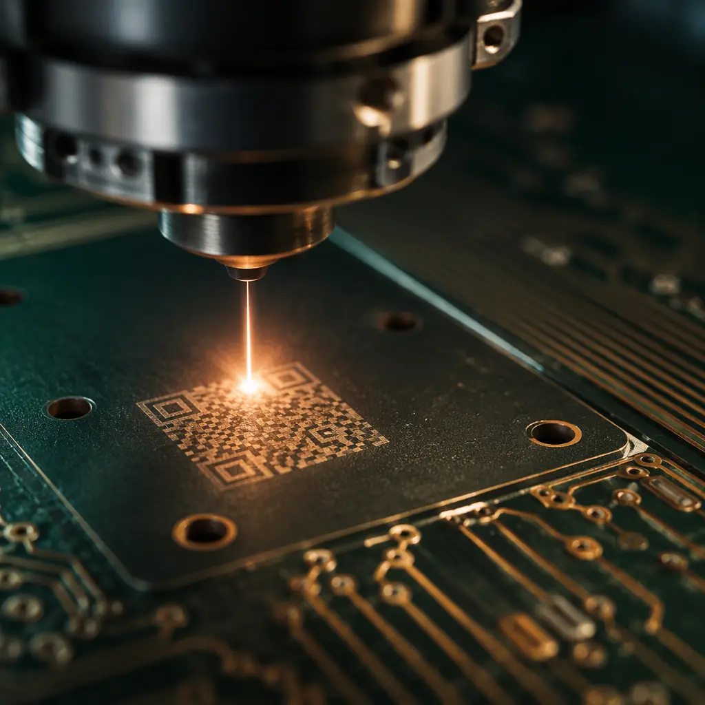
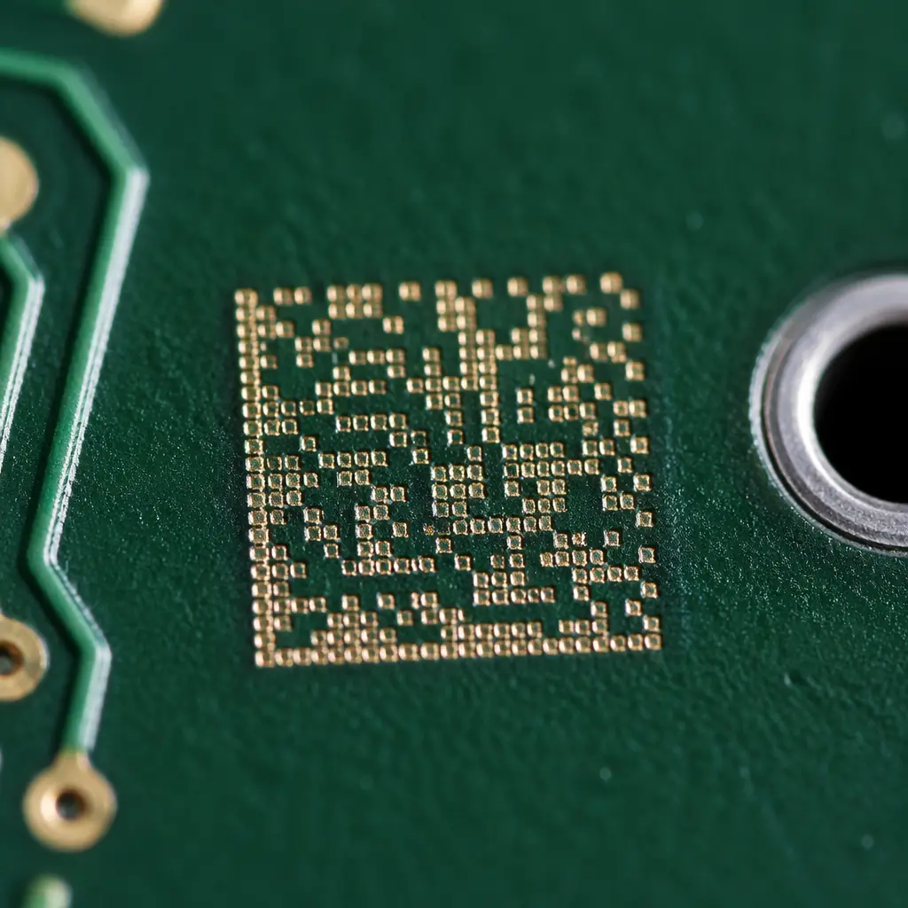

In August 2023, a Tier-1 automotive supplier recalled 84,000 ECU modules. The root cause wasn't a design flaw or a manufacturing defect — it was a traceability gap. The PCB fabricator had changed laminate suppliers mid-production run, and because lot-level traceability stopped at the panel level, the supplier spent six weeks testing every serial number in the field to identify which units contained the substituted material. The recall cost exceeded $4.2 million.
Lot traceability in PCB manufacturing is no longer optional for regulated industries. IATF 16949 requires full forward-and-backward traceability for automotive electronics. AS9100D mandates it for aerospace. ISO 13485 and FDA 21 CFR Part 820 demand it for medical devices. At Huaxing PCBA, our traceability system captures material genealogy, process parameters, and inspection records at the individual panel level — linking raw laminate lot numbers, solder mask batches, and surface finish chemistry to every board shipped. This guide explains what traceability actually requires, which marking technologies work, and how to specify traceability in your PCB procurement without overpaying.

IPC-1782: The Standard That Defines Traceability Levels
IPC-1782 defines four levels of traceability, from basic lot identification to full component-level genealogy with process parameter logging. Most procurement specifications reference "traceability required" without specifying which level — creating a gap between what the buyer expects and what the fabricator delivers.
Basic Lot Identification
Manufacturer name, date code, and lot number marked on the PCB or its packaging. Suitable for consumer electronics and general industrial products. No material genealogy tracking. This is the minimum that any ISO 9001-certified fabricator should provide by default.
Material Lot Traceability
Links every PCB to the specific lots of laminate, prepreg, solder mask, and surface finish chemistry used. If a laminate lot is later found defective, the fabricator can identify every board that used that material. Required as a minimum by IATF 16949 for automotive electronics.
Process Parameter Logging
Adds process data to the traceability record: lamination press cycle, drilling parameters, plating current density, solder mask curing profile. Enables root cause analysis when field failures occur. AS9100D aerospace customers typically require Level 3 as a minimum.
Full Component-Level Genealogy
Every component, connector, and solder joint is traceable to its source lot, placement machine, and reflow profile. This is the standard for Class 3 medical implantables, satellite electronics, and defense systems where a single failure is catastrophic.
Procurement Reality: Level 3 traceability adds approximately 3-6% to PCB unit cost. Level 4 adds 8-15%. The key is specifying exactly the level your end market requires — not defaulting to "maximum traceability" and paying for capabilities you don't need. IATF 16949 auditors accept Level 2 as sufficient for most automotive applications.
UID Marking Technologies: Laser, Inkjet, and Label — Which One Survives Your Process
The traceability chain breaks if the marking doesn't survive assembly. A beautifully laser-etched 2D data matrix that washes off during aqueous cleaning is worse than no marking at all — it creates false confidence. The marking technology must be selected for your downstream process environment.

Laser Marking — The Gold Standard for PCB Traceability
UV or fiber laser etches a permanent 2D data matrix (or human-readable alphanumeric) directly into the solder mask or exposed copper. Survives reflow (260°C peak), aqueous wash, and conformal coating. Readable after 1,000 thermal cycles. The industry default for automotive and aerospace. Minimum feature size: 0.15mm with UV laser; 2D codes as small as 1.6 × 1.6mm are routinely achieved on our production lines. See our solder mask selection guide for compatibility considerations.
Inkjet Printing — Flexible but Less Durable
Direct inkjet printing of data matrix codes and human-readable text. Faster than laser for high-volume runs but less durable: ink may degrade under aggressive flux chemistries or high-temperature conformal coating cure cycles. Suitable for consumer and general industrial products where post-assembly readability is verified once, not across the product lifecycle.
Adhesive Labels — Only When Marking Isn't Possible
Polyimide or polyester labels with printed barcodes, applied to PCB surfaces. Least durable option — labels can delaminate during reflow, trap flux residue, or obscure test points. Generally restricted to low-temperature assemblies or situations where the PCB surface material (PTFE, ceramic) cannot be laser-marked. If labels are unavoidable, specify polyimide with acrylic adhesive rated for 260°C.
Date Code Standards and What They Actually Mean
Date codes on PCBs are not standardized globally, which creates confusion in procurement. A "2146" on one supplier's board might mean Week 46 of 2021; on another's, it could mean a completely different encoding scheme. For regulated industries, ambiguity in date code interpretation can trigger unnecessary containment actions during supplier audits.
The most widely accepted format in PCB manufacturing follows YYWW (two-digit year + two-digit week number), per IPC-1782 recommendations. For example, "2625" = Week 25 of 2026. Some customers additionally require a separate lot number that encodes the production line, shift, and internal batch identifier — this is common in automotive PCB procurement where PPAP documentation demands full production history traceability.
Specification Tip: Include date code format requirements in your PCB fabrication specification, not just your PO. Write: "Date code shall be laser-etched in YYWW format per IPC-1782 Level 2, located on the secondary side within 10mm of the board edge." This eliminates ambiguity and gives your incoming inspection team a clear acceptance criterion.
Traceability in Practice: What Your PCB Supplier Should Deliver
A traceability certificate is not a traceability system. Many fabricators provide a one-page certificate of conformance (CoC) listing a lot number — but cannot, when asked, identify which specific laminate lots went into that lot of PCBs. Here is what a real traceability package should include for regulated industries:
Material Certificate Package
Laminate manufacturer C of C with lot number, prepreg type and lot, solder mask batch certificate, surface finish chemistry certificate. Each linked to the PCB lot via a traceability matrix. Our system automatically generates this package for every IATF 16949 and AS9100 order — it is not a special request.
Process Traveler with Digital Twin
Every panel carries a unique barcode that is scanned at each process step. The resulting digital record captures which machine, which operator, and which process recipe was used — creating a "digital twin" of the production journey. This is the foundation of Level 3 traceability and is essential for root cause failure analysis.
Retention Policy
Traceability records should be retained for the product lifecycle plus a defined archival period. Automotive typically requires 15 years after end of production. Aerospace often requires 20+ years. Ask your PCB supplier about their record retention policy before placing the order — discovering that records were purged after 3 years when your customer requests a 10-year traceability audit is not recoverable.
What This Means for Your Next PCB Procurement
Traceability is a procurement specification decision, not a manufacturing afterthought. Specify IPC-1782 Level 2 as your default for any order destined for automotive, medical, or aerospace end markets — the cost premium is modest, and the audit protection is invaluable. At Huaxing PCBA, our traceability system links laminate lots, process parameters, and inspection records to every panel shipped, with 15-year record retention as standard for IATF 16949 and AS9100 orders. Every board carries a laser-etched 2D data matrix and human-readable date code — not because customers always ask for it, but because the one time they do, having it already in place is the difference between passing an audit and losing a qualification.